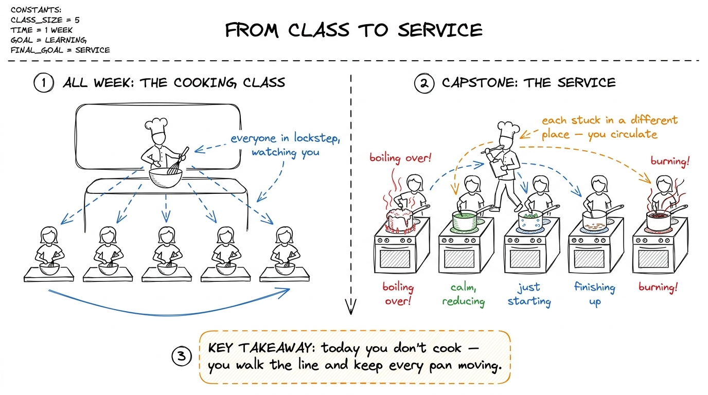
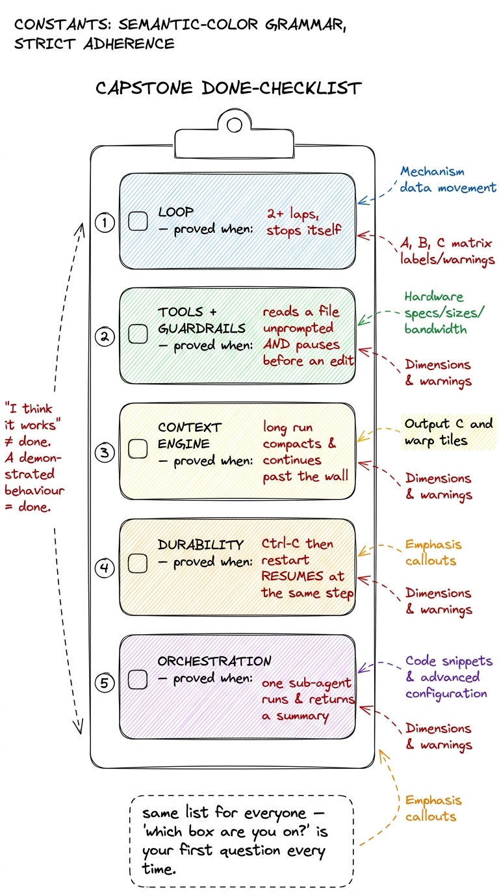
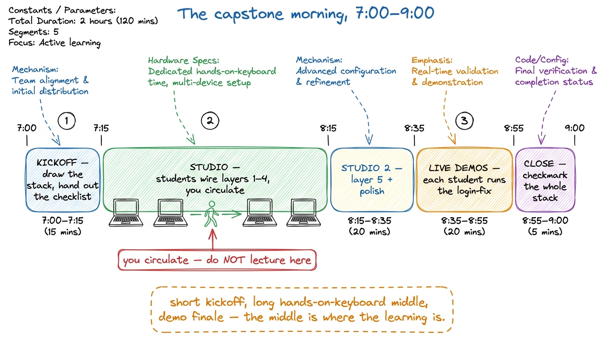
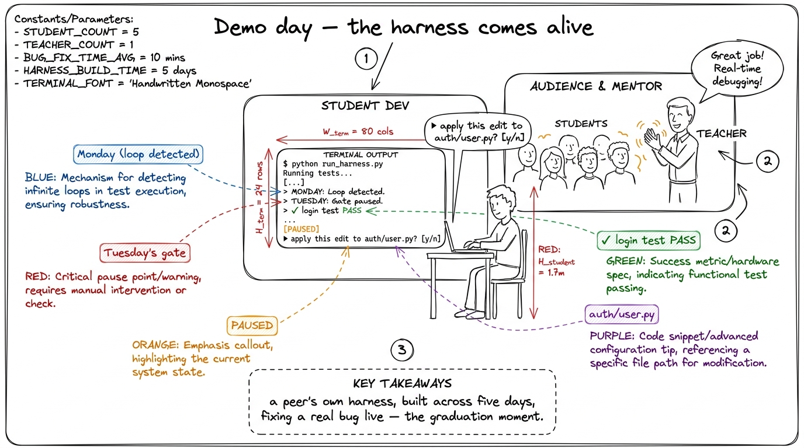
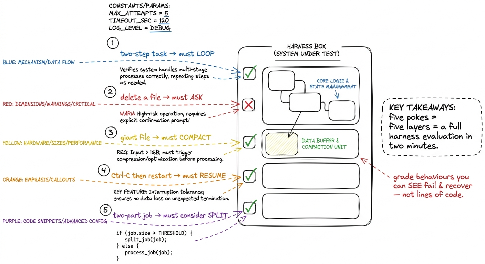

Running the capstone: their own harness
By the end of this chapter you can run the final morning of the workshop — the capstone — so that every student walks out with their own working pi-style harness they understand line by line, you know exactly how to unblock each of them without writing their code for you, and the room ends with live demos that feel like a graduation. This is the day the five layers stop being lessons and become one running program.
The capstone is not a new lecture. It is a studio. All week you taught; today you coach. The whole craft of this morning is holding a room of people who are each stuck in a different place, keeping them moving, and making sure nobody's harness stays broken long enough for them to lose heart. Let's build the plan the way you'll run it.
The one thing that changes today
For four days you stood at the board and the students followed. Today the students build and you circulate. That inversion is the whole thing, and if you don't plan for it, you'll drift back into lecturing and the room will fall behind. So the first job is to internalise: today your value is not on the whiteboard, it's at each student's shoulder.

figure rendering · The mental shift for the capstone: stop being the demo chef in locksteWhat "their own harness" actually means
Be precise with the students about the target, or half of them will over-build and half will freeze. The capstone deliverable is small and exact: one Python program, a few hundred lines, that runs in their terminal, points at a real folder, and does the whole login-test-fix loop end to end — reading, reasoning, asking before it edits, editing, re-running, and surviving a Ctrl-C. That's it. It is the same pi-style agent from the whole-arc map, now assembled by their own hands from the five layers they built across the week.
The done-checklist — the spine of the whole morning
This is the single most important artifact you bring today. It is a checklist, one block per layer, and every student works down the same list. It turns a vague "build your harness" into five concrete, checkable milestones. Put it on the wall. When a student says "I'm stuck," your first move is always: "which box are you on?" The checklist is how you keep five different people legible to yourself at once.
Here is the list, and the one test that proves each box is really done — because "I think it works" is not done; a demonstrated behaviour is done.
- Layer 1 — the loop is done when: you type a request and the agent goes around more than once on its own — calls the model, runs a tool, feeds the result back, calls the model again — and stops by itself when the job is answered. The proof: it takes at least two laps with no human nudging it between them.
- Layer 2 — tools + guardrails are done when: the agent can
read_file,edit_file, andrun_bashon real files on disk, AND it pauses and asks before an edit or a shell command. The proof: it reads a file unprompted, and it stops and waits for your "yes" before writing one. - Layer 3 — the context engine is done when: a long run that would have overflowed the window instead compacts — old turns get summarised, recent turns stay verbatim, and the run continues. The proof: force a long transcript and watch it keep going past the point a naive loop would have crashed.
- Layer 4 — durability is done when: you
Ctrl-Cthe process mid-task, restart it, and it replays the log and continues instead of starting the job over. The proof: kill it after step 3, restart, and it resumes at step 4 — not step 1. - Layer 5 — orchestration is done when: the top agent can spawn at least one sub-agent with its own fresh context, hand it a narrow task, and fold back a short summary. The proof: one sub-agent runs and returns a digest, not its whole transcript.

figure rendering · The capstone spine: five checkable boxes, each proved by a demonstrateThe morning, block by block (7:00–9:00 AM IST)
Two hours, and the shape is deliberate: a short kickoff, a long studio, and a demo finale. Resist the urge to teach in the middle — every minute you spend at the board is a minute five terminals sit idle.

figure rendering · The two-hour capstone as five timed segments: a 15-minute kickoff, an7:00–7:15 — Kickoff (15 min). Draw the five-layer stack live one last time, exactly as on Monday, but now say: "today you assemble all of it." Hand out the done-checklist. Announce the one rule of the morning — no new features, just wire the five you have — and the finish line: at 8:35 everyone runs the login-fix demo for the room. Then get off the stage.
7:15–8:15 — Studio 1 (60 min). The heart of the day. Students wire layers 1 through 4 into one file, working down the checklist. You walk the line continuously. Your job is triage: spot who's truly stuck versus who's productively fighting, and spend your minutes on the truly stuck. Never sit with one student for more than a few minutes — if it's deep, give them a next step and move on, then circle back.
8:15–8:35 — Studio 2 (20 min). Layer 5 and polish. Realistically, orchestration is the box most students won't fully finish, and that's fine — make it explicit that a harness with layers 1–4 solid and layer 5 stubbed is a pass. Use this block to help the ahead students add a real sub-agent and the behind students get their durability box green. Nobody should still be fighting Layer 1 here; if someone is, pair them with a finished student.
messages array before the next model call — the loop is dropping the observation. This is the classic capstone bug because it's the seam between Layer 1 and Layer 2. Teach yourself to recognise it in five seconds: ask "does the tool result get appended to messages before you call the model again?" It fixes eight out of ten stuck students.8:35–8:55 — Live demos (20 min). The graduation. Each student, in turn, points their harness at a real repo and types "the login test is failing — fix it," and the room watches it read, reason, ask, edit, and pass. This is the emotional peak of the entire five days. Budget roughly two to three minutes each; keep it moving; celebrate every single one, especially the rough ones.

figure rendering · The capstone finale: a student's own harness pausing to ask permission8:55–9:00 — Close (5 min). Return to the wall stack and add the final green checkmark to Layer 5, completing the whole cake. One sentence: "you built every layer of this, and it runs." Point them at the next step — hardening it, pointing it at their own real projects — and end.
How to evaluate a harness (so your feedback is real)
When you review a student's harness, don't grade it on lines of code or cleverness. Grade it on behaviours, using the same proof-tests from the checklist. A good harness is one you can make fail on purpose and watch recover. So your review is a set of small adversarial pokes, not a code read.
Ctrl-C mid-run then restart — does it resume or restart? (5) give it a two-part job — does it consider splitting, or cram it all in? Five pokes, five layers. Each poke either passes visibly or fails visibly — no ambiguity.
figure rendering · The evaluation as five adversarial pokes — one per layer — where a goo1 A gentle grading note for the mentor: the student whose harness fails poke 4 but recovers gracefully once you point it out has learned more than the one whose harness happens to pass all five but who can't explain why. The capstone measures understanding, not luck. When you review, ask "what would you change to make it resume?" — the answer, not the pass, is the real grade.
The two failure modes of the morning, and the fix
Two things reliably go wrong on capstone day, and both are about you, not the students. First: you get sucked into one student's deep bug for twenty minutes and four other terminals stall. Fix: a hard personal rule — no more than three minutes at one seat before you give a next step and move. Second: you slip back into lecturing because it feels productive. Fix: every time you catch yourself at the board mid-studio, ask "could I say this to just the two students who need it instead?" — and usually you can.
2 Keep a "parking lot" on the board — a corner where you jot recurring bugs as you spot them (like the dropped-tool-result bug). If three students hit the same wall, then it's worth a 90-second all-room aside. One student's bug is a house call; three students' bug is a broadcast. The parking lot tells you which is which without breaking your circulation rhythm.
You can now teach
- The capstone as a studio, not a lecture — the head-chef-walking-the-line shift, and why your value today is at each student's shoulder, not on the whiteboard.
- The exact deliverable: one small, complete pi-style harness that integrates the five layers the students already built — "small and real beats big and broken," and there is no sixth layer.
- The done-checklist — five boxes, each proved by a demonstrated behaviour — and using "which box are you on?" to keep five different students legible at once.
- The block-by-block morning (7:00–9:00): a 15-minute kickoff, an hour-plus of hands-on studio while you circulate, live login-fix demos, and a closing checkmark of the full stack.
- How to evaluate a harness with five adversarial pokes — loop, ask, compact, resume, split — the same axes real harnesses are stress-tested on.
- The classic capstone bug (the dropped tool result at the Layer-1/Layer-2 seam) and the two mentor failure modes — over-sitting and re-lecturing — with the fix for each.